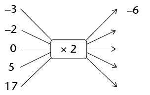
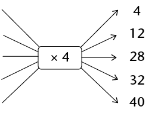

Algebraïese vergelykings
In hierdie hoofstuk gaan jy vergelykings oplos deur inverse bewerkings toe te pas. Jy gaan ook vergelykings oplos wat eksponente bevat.
Dink vorentoe en terug
Doen en herstel wat gedoen is
- Voltooi die vloeidiagram deur die
uitvoergetalle te bepaal.

- Voltooi die tabel.
x
-3
-2
0
5
17
2x
- Evalueer
\(4x\) as:
- \(x = -7\)
- \( x = 10\)
- \( x = 0\)
- \(x = -7\)
-
- Voltooi die vloeidiagram deur die invoergetalle te bepaal.

- Puleng het nog ’n heelgetal in die vloeidiagram
ingevoer en â68 as ’n antwoord
gekry. Watter heelgetal het sy ingevoer? Wys jou berekening.
- Verduidelik hoe jy gewerk het om die invoergetalle te
bepaal toe jy vraag (a) gedoen het.
- Voltooi die vloeidiagram deur die invoergetalle te bepaal.
-
- Voltooi die tabel .
x
\(5x\)
5
15
25
40
90
- Voltooi die vloeidiagramme.

- Verduidelik hoe jy die tabel voltooi het.
- Voltooi die tabel .
In algebra wil ons soms uitdrukkings evalueer. Wanneer ons uitdrukkings evalueer, vervang ons ’n veranderlike in die uitdrukking met ’n invoergetal om die waarde van die uitdrukking te kry wat die ooreenstemmende uitvoergetal genoem word. Ons sal aan hierdie proses dink as ’n doenproses .
In ander gevalle wil ons weer dit wat gedoen is ongedaan maak of herstel Wanneer ons weet watter uitvoergetal verkry is, maar nie weet watter invoergetal gebruik is nie, moet ons dit wat in die evaluering van die uitdrukking gedoen is ongedaan maak. Dan sê ons dat ons ’n vergelyking oplos.
- Kyk weer na vrae 1 tot 5.
Sê vir elke vraag of die vraag ’n doenproses of ’n herstelproses
vereis het. Gee ’n verduideliking vir jou antwoord (byvoorbeeld: invoer na
uitvoer).
-
- Voltooi die vloeidiagramme.


- Wat sien jy raak?
- Voltooi die vloeidiagramme.
-
- Voltooi die vloeidiagramme.


- Wat sien jy raak?
- Voltooi die vloeidiagramme.
-
- Voltooi die vloeidiagramme.

- Wat sien jy raak?
- Voltooi die vloeidiagramme.
-
- Voltooi die vloeidiagram.
- Watter berekeninge sal jy doen om te bepaal wat die
invoergetal was as die
uitvoergetal 20 is?
- Voltooi die vloeidiagram.
Los die volgende probleme op deur te herstel wat gedoen is om die antwoord te kry:
- ’n Sekere getal word met 10
vermenigvuldig en die antwoord is 150. Wat is die getal
r?
- Wanneer ’n sekere getal deur 5 gedeel word,
is die antwoord 1. Wat is die getal?
- Wanneer 23 by ’n sekere getal getel
word, is die antwoord 107. Wat is die getal?
- Wanneer ’n
sekere getal met 5 vermenigvuldig word en 2 word van die antwoord
afgetrek, is die finale antwoord 13. Wat is die oorspronklike getal
?
Om van die uitvoerwaarde na die invoerwaarde te beweeg word oplossing van die vergelyking vir die onbekende genoem.
Los vergelykings op deur optellings- en vermenigvuldigingsinverses te gebruik
Bepaal die onbekende
Kyk na die vergelyking \(3x + 2 = 23\).
Ons kan die vergelyking \(3x + 2 = 23\) in ’n vloeidiagram voorstel, waar \( x\) ’n onbekende getal voorstel:

Wanneer jy die proses in die vloeidiagram omkeer, begin jy met die uitvoergetal 23, trek dan 2 af en deel dan die antwoord deur 3:
Ons kan die hele omgekeerde proses hier bo as volg neerskryf:
Trek 2 van albei kante van die vergelyking af:
\( \begin{align} 3x + 2 - 2 &= 23 - 2 \\ 3x &= 21 \\ \text{Deel albei kante deur 3 }: \\ \frac{3x}{3} &= \frac{21}{3} \\ x&=7 \end{align}\)
Ons sê \(x = 7\) is die oplossing van \(3x + 2 = 23\) want \(3 \times 7 + 2 = 23\). Ons sê dat \(x = 7\) vergelyking \(3x + 2 = 23\) waar maak.
Die getalle +2 en â2 is optellingsinverses (of additiewe inverses) van mekaar. Wanneer ons ’n getal en sy optellingsinverse bymekaartel, kry ons altyd 0.
Die getalle 3 en \(\frac{1}{3}\)is vermenigvuldigingsinverses (of multiplikatiewe inverses) van mekaar. Wanneer ons ’n getal en sy vermenigvuldigingsinverse vermenigvuldig, kry ons altyd 1, so \(3 \times \frac{1}{3} = 1\)
Die optellingsinverses en vermenigvuldigingsinverses help ons om die onbekende waarde of die invoerwaarde âop sy eieâ te kry.
Onthou ook:
- Die vermenigvuldigings- eienskap van 1 : produk van enige getal en 1 is daardie getal.
- Die optellingseienskap van 0 :die som van enige getal en 0 is daardie getal.
Los die vergelykings hier onder op deur die optellingsinverses en vermenigvuldigings-inverses te gebruik. Kontroleer jou antwoorde.
- \(x + 10 = 0\)
- \(49x + 2 = 100\)
- \(2x = 1\)
- \(20 = 11 - 9x\)
Soms moet jy gelyksoortige terme kombineer voor jy die vergelykings kan oplos deur optellingsinverses en vermenigvuldigingsinverses te gebruik, soos in die voorbeeld hier onder.
\(7x\) en \(3x\) is gelyksoortige terme en kan met een ekwivalente uitdrukking \((7+3)x = 10x\) vervang word
Voorbeeld : Los op vir \(x\):
\( \begin{align} 7x + 3x &= 10 \\ 10x &= 10 \\ \frac{10x}{10} &= \frac{10}{10} \\ x &= 1\end{align}\)
- \(4x + 6x = 20\)
- \( 5x = 40 + 3x\)
- \( 3x + 1 - x = 0\)
- \(x + 20 + 4x = -55\)
Los vergelykings op wat magte behels
Om ’n eksponensiële vergelyking op te los is dieselfde as om die vraag te vra: Tot watter eksponent moet die grondtal verhef word om die vergelyking waar te maak ?
- Voltooi die tabel.
\(x\)
1
3
5
7
\(2^x\)
- Voltooi die tabel.
\(x\)
2
5
\(3^x\)
1
27
Karina het die vergelyking \(3x = 27\) soos volg opgelos:
\( \begin{align} 3^x &= 27 \\ \text{Dus } 3^3 &= 3^3 \\ \text{Dus } x &= 3 \end{align}\)
Die getal \(27\) kan as \(3^3\) uitgedruk word, want \(3^3 = 27\).
- Gebruik nou Karina se metode en
los op vir x in elk van die volgende:
- \(2^x = 32\)
- \(4^x = 16\)
- \(6^x = 216\)
- \(5^{x + 1} = 125\)
- \(2^x = 32\)